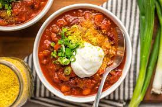

Jimbo's Famous Chili

Description
Prep time: approx 45 minutes
My dad's award-winning vegan chili recipe. By "award-winning" I mean that he always wins the neighborhood's annual chili cook-off. 100% vegan.
Ingredients
- 10oz Beyond Meat Beef Crumbles
- 2 16oz cans tomato sauce
- 1 16oz can diced tomato
- 1 16oz can chili beans (can substitute red, garbanzo, or black beans if preferred)
- 6-8oz sliced mushrooms
- 2 packets McCormick's Chili Seasoning
- garlic powder to taste
- chili powder to taste
- 1/2 box whole grain spaghetti
- Shredded vegan cheddar
- vegan sour cream
- chopped green onions
- 1 sliced or diced avocado
Steps
- In a skillet, brown beef crumbles over medium heat, adding chili powder to taste.
- In a large pot, add tomato sauce, diced tomoato, beans, sliced mushrooms, and chili seasoning and stir. Heat over medium heat for 30 minutes, stirring regularly and sprinkling in garlic powder and chili powder to taste. Do NOT let it boil.
- When the crumbles are browned (about 10 minutes), stir into pot and continue heating until the 30 minutes are up.
- While the other ingredients are heating, prepare spaghetti according to the box instructions.
- Strain pasta and leave covered on the stove (without heat).
- Set out the toppings (cheese, sour cream, avocado, and onions) and for each serving, fill a bowl with chili poured over spaghetti, then top according to taste.